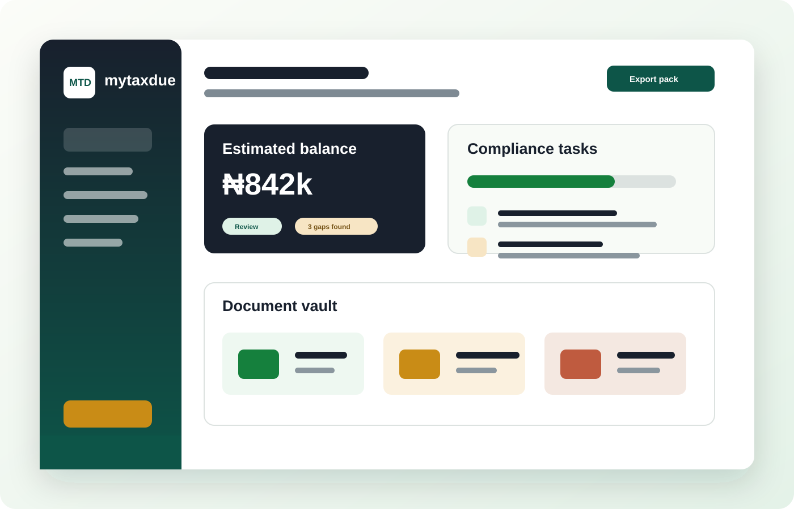
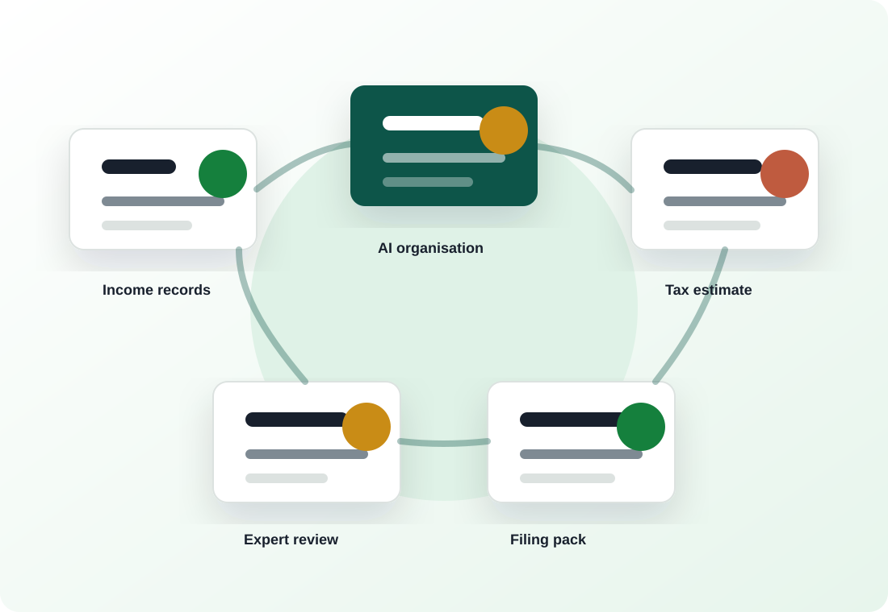

AI tax forecast
Estimate likely tax exposure from income, expenses, credits, and relief inputs before you file.
AI Tax Optimization Platform
Taxseasonal helps individuals, freelancers, SMEs, and accountants estimate tax exposure, organise records, find possible reliefs, and prepare cleaner tax submissions.
Estimated balance
₦0 Complete the planner to view an estimate.Product Dashboard
Upload records, track due dates, organise deductible expenses, and send a clean review pack to an accountant before filing.
Track what matters. Deadlines, obligations, and open tasks in one timeline.
Know your likely bill. Estimate early and update as you add records.
Share a clean pack. Export a review bundle your accountant can sign off faster.

Features
Built for people who want to understand their tax position before the deadline and professionals who need cleaner client records.
Estimate likely tax exposure from income, expenses, credits, and relief inputs before you file.
Identify missing documents and possible deductible categories for accountant review.
Store receipts, invoices, PAYE records, WHT notes, pension evidence, and business expense files.
Track filing deadlines, payment reminders, state obligations, and document review tasks.
Summarise tax notices and generate a response checklist for your accountant or tax adviser.
Package summaries, estimates, documents, and notes into a professional review bundle.
Services
Use Taxseasonal self-serve tools, or choose a guided service when you want expert confidence.
Set up categories, upload the right records, and build your first complete compliance checklist.
We help you prepare a clean summary, highlight gaps, and package documents for quick validation.
For small businesses: recurring document capture, PAYE/WHT organisation, and readiness check-ins.

How It Works
1. Add income and expenses. Capture salary, freelance income, business revenue, invoices, and deductions.
2. Let AI organise the facts. Taxseasonal groups documents, flags gaps, and builds a checklist.
3. Review with a professional. Accountants can verify the estimate and prepare the final filing.
For Accountants
Taxseasonal gives accountants a structured workspace for client data, document requests, estimate review, and filing readiness.
Needs WHT credit review and expense validation
VAT records uploaded, payroll documents pending
Estimate complete, relief evidence ready
Pricing
Start with a planning estimate, then upgrade when you need document automation, expert review, or accountant workflows.
₦0
Basic estimate, checklist, and reminders for personal planning.
Start free₦4,500/month
Document vault, relief finder, estimate history, and expert-ready export.
Join betaCustom
Client workspace, review queue, team controls, and bulk filing preparation.
Talk to usTrust & Controls
Taxseasonal is designed as a planning and preparation layer. Final filings should be reviewed by a qualified tax professional or the relevant authority before submission.
FAQ
The website demo prepares estimates and filing-ready information. Direct filing would require approved integrations and professional review before launch.
No. It is a planning demo that helps users understand possible exposure. Final tax positions should be verified by a qualified adviser or tax authority.
Individuals, freelancers, SMEs, and accountants who need a clearer way to organise tax information and prepare for compliance.
Join The Beta
Tell us what you need help with and the Taxseasonal team will prepare the right onboarding path.